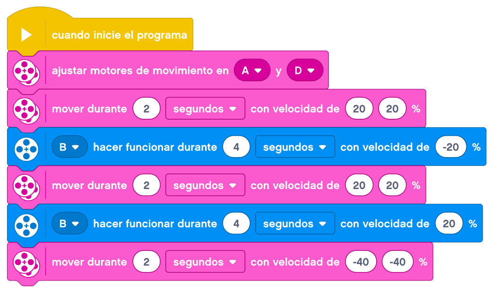
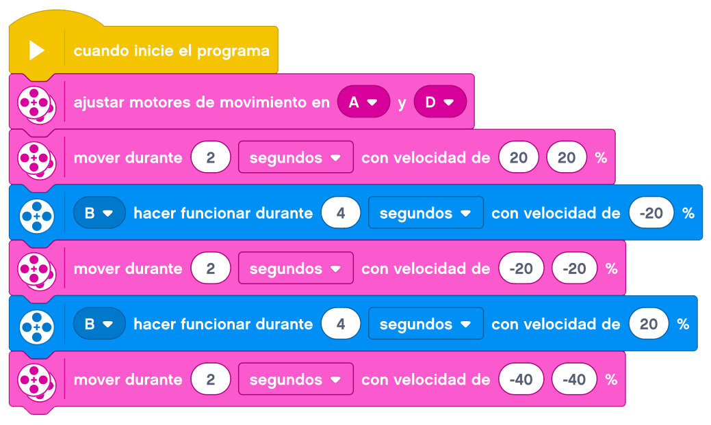

En esta nueva actividad vamos a añadirle a nuestra
Base Motriz
una
Pinza de Agarre
y le conectamos los cables.
Para manejar esta pinza, utilizaremos nuevos bloques de movimiento.
En un primer reto, pondremos una lata de CocaCola (o culaquier otro objeto similar) a cierta distancia de
nuestro robot.
Nuestro robot tendrá que acercarse al objeto, cerrar las pinzas y transportarlo más adelante.
Tendremos que marcar tanto nustro punto de inicio como el sitio exacto donde pondremos el objeto para no
perder las referencias, ya que el movimiento lo haremos por tiempo.
Un ejemplo de como podemos resolver el reto es el siguiente.

En un segundo reto, tendremos que acercarnos al objeto, cerrar las pinzas y transportarlo al sitio de origen
de nuestro robot.
Un ejemplo de como podemos resolver el reto es el siguiente.
